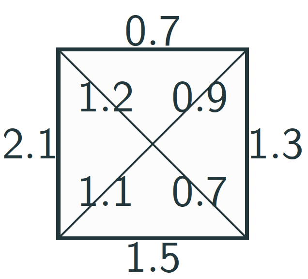

25. Regge finite elements and Regge metrics#
In this notebook, we discuss the Regge finite elements, which we will use to approximate the metric tensor of a (pseudo-)Riemannian manifold. We motivate that the Regge finite element space is the appropriate object to discretize the metric tensor, give some historical remarks, sketch their construction, and relate it to the function space \(H(\mathrm{curl}\,\mathrm{curl})\) associated to the incompatibility operator \(\mathrm{inc}\).
25.1. History of Regge elements#
Let \((M,g)\) be a (pseudo-)Riemannian manifold with \(M\subset\mathbb{R}^N\) and \(g\) the metric tensor with signature ++++ (positive definite in the Riemannian case) or -+++ (pseudo-Riemannian manifold). After discretizing the manifold’s domain \(M\) by a simplicial triangulation \(\mathcal{T}\) (e.g., triangles in 2D and tetrahedra in 3D), we need to construct an approximation of the metric tensor \(g\) on this triangulation. It will turn out that the Regge finite element space is the correct object.
A first intuitive way to approximate \(g\) on \(\mathcal{T}\) is to assign to each edge \(E_{ij}\), connecting two distinguished points \(x_i\) and \(x_j\) of the triangulation, its squared lengths \(l^2_{ij}\) as measured by the metric \(g\), i.e.
{kind=link}

where \(t_{E_{ij}}\) denotes the unit tangent vector of the edge \(E_{ij}\). Using the squared value, we can use negative numbers to account for pseudo-Riemannian manifolds appearing in general relativity. One may hope that this procedure yields a good approximation of the exact metric for a sequence of finer triangulations. With this idea Tullio Regge proposed in Regge. General relativity without coordinates. Il Nuovo Cimento (1961) a method to solve numerical relativity in a coordinate-free way. From the edge lengths, he computed the angle defect (also called angle deficit) to approximate the curvature of the manifold. We will intensively discuss the concept of angle defect in the following notebooks. This method became popular under the name Regge calculus, see, e.g. Barret, Oriti, Wiliams. Tullio Regge’s legacy: Regge calculus and discrete gravity. arXiv, (2018). for a review of Regge calculus. The first proof that this concept of an angle defect converges to the exact curvature was given in Cheeger, Müller, Schrader. On the curvature of piecewise flat spaces. Communications in Mathematical Physics, (1984). by proving convergence in the sense of measures.
Convergence in measures is weak. Furthermore, we would also like to use higher-order approximations of the exact one. To this end, we embed the above approach into a FEM context. First, it was recognized by Sorkin in Sorkin. Time-evolution problem in Regge calculus. Phys. Rev. D, (1975). that assigning length values is equivalent to defining a piecewise constant metric tensor: Let \(l_{ij}^2\) denote the value of the edge connecting vertices \(x_i\) and \(x_j\), \(i\neq j\). Then there exists a unique piece-wise constant metric tensor \(g_h\) on the triangulation \(\mathcal{T}\) such that
The above equation defines the metric \(g_h\). Astonishingly, the metric \(g_h\) is not completely discontinuous over element interfaces: Let \(F\) be an \(N-1\)-dimensional facet of the triangulation and let \(X,Y\) be two vector fields living in \(F\), i.e. they are tangential vector fields on \(F\), \(X,Y\in \mathfrak{X}(F)\). Then the values \(g_h(X,Y)\) measured by the piece-wise constant metric \(g_h\) on the two elements \(T_L\) and \(T_R\) connected by \(F= T_L\cap T_R\) coincide
We call this property tangential-tangential continuity, or in short \(tt\)-continuity. Note that the components involve at least one normal vector jump in general.
Christiansen Christiansen. On the linearization of Regge calculus. Numerische Mathematik, (2011). embedded Regge calculus into a FEM context with finite element exterior calculus (FEEC), similar to Whitney 1-forms were identified as Nedelec elements. In contrast to the tangential continuous Nedelec elements, which are a conforming subspace of \(H(\mathrm{curl})=\{u\in L^2(\Omega,\mathbb{R}^N)\,:\, \mathrm{curl}(u)\in L^2\}\), Regge elements
are a slightly non-conforming subspace of the function space
where \(\mathrm{inc}\) is the incompatibility operator. It is ``slightly non-conforming’’ because the required Sobolev embedding theorem fails to hold by an arbitrarily small \(\varepsilon>0\). In Li. Regge Finite Elements with Applications in Solid Mechanics and Relativity. PhD thesis, (2018). Li extended the Regge finite element space to arbitrary polynomial order, \(\mathrm{Reg}_h^k\), and arbitrary dimensions \(\Omega\subset \mathbb{R}^N\) for simplicial triangulations. Regge finite elements for quadrilateral, hexahedra, and prisms have been defined in Neunteufel. Mixed finite Element Methods For Nonlinear Continuum Mechanics and Shells. PhD thesis, (2021).
25.2. Regge finite element construction#
We sketch the construction of Regge finite elements for triangles and tetrahedra. For other shapes, we refer to Neunteufel. Mixed finite Element Methods For Nonlinear Continuum Mechanics and Shells. PhD thesis, (2021).. The degrees of freedom (DoFs) to construct globally tangential-tangential continuous functions are motivated by the edge lengths and their extensions to higher dimensional simplices. They read for polynomial order \(k\) on a tetrahedron \(T\) with according faces \(F_i\) and edges \(E_i\)
Here, \(TF_i\odot TF_i\) denotes the symmetric dyadic product of vectors in the tangent space of \(F_i\). That means symmetric, matrix-valued polynomials, which are zero when multiplied with the normal vector from either side. Only the edge DoFs and the internal ones are required for a triangle.
We can construct lowest order edge and bubble shape functions of a triangle with the barycentric coordinates \(\lambda_1\), \(\lambda_2\), \(\lambda_3\).
For higher-order shape functions, one might augment these low-order functions by, e.g. linear independent Legendre and Jacobi polynomials. The construction for higher-dimensional simplices follows the same lines, for example, by constructing appropriate bubble functions. In the following figure, the DoFs are schematically sketched for some shapes.
{kind=link}
{kind=link}
{kind=link}
{kind=link}
{kind=link}
{kind=link}
The canonical Regge interpolant \(\mathcal{I}_{Reg}^k\) is defined by the requirement to preserve tangential-tangential moments at edges and inner moments
and can easily be extended to higher dimensions.
25.3. Further applications of Regge finite elements#
Besides their essential contribution in discretizing the metric tensor of (pseudo-)Riemannian manifolds for curvature approximation and numerical relativity, Regge finite elements have been successfully used to discretize fields in elasticity.
Avoiding membrane locking in (nonlinear) shell analysis by interpolating the membrane stresses into the Regge finite element space Neunteufel, Schöberl. Avoiding membrane locking with Regge interpolation. Computer Methods in Applied Mechanics and Engineering, (2021).
Linear and nonlinear elasticity (continuum mechanics) by discretizing the strain/stress tensor by Regge elements Li. Regge Finite Elements with Applications in Solid Mechanics and Relativity. PhD thesis, (2018)., Hauret, Hecht. A discrete differential sequence for elasticity based upon continuous displacements. SIAM Journal on Scientific Computing, (2013)., Neunteufel, Pechstein, Schöberl. Three-field mixed finite element methods for nonlinear elasticity. Computer Methods in Applied Mechanics and Engineering, (2021).